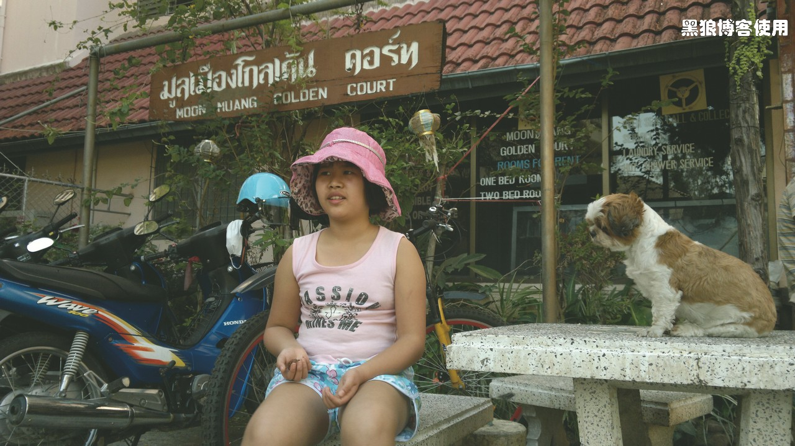

泰国自助游（4）
2 月 6 日，我发现的脸上起了好多个红色的小包，也不知是晒伤了，还是过敏了。
清迈的太阳很足，今天的安排还是休整为主，上午准备去逛逛清迈寺，下午换宾馆，晚上随意活动。
宾馆的早餐很丰盛，自助，吃了 2 天，感觉胖了，看来以后还是少吃自助的好。
逐渐习惯了泰国慢节奏的生活，一听说逛寺庙，除了我和胡有理，别人都不去了，嫌太晒。走路只需要 5 分钟，不去就不去吧，我跟胡有理两个人去逛。路上少不了鲜榨果汁，呵呵。
泰国的寺庙据说好多好多，基本都不收费，人也少，清净，狗懒散的地睡在马路上。在泰国，想找公厕或者停车，寺庙是一个不错的选择，不过，还没发现到停车收费的人。
清迈寺内人很少，随意进出，连个把门的也没有。
不太清楚供奉的是哪个大神，泰国寺庙修行的是小乘佛法。我是无神论者，只是参观，没有拜佛。
寺庙不是很大，花花草草风景宜人。
唯一看到的一个镀了一半金光的佛塔，不知有什么典故。
休息片刻。
寺内的人（可能是香客）定时放置食物给流浪狗。
中午回到宾馆，大家一起草草吃罢午饭，搬着行李换到另外的宾馆。后来发现，还是这个宾馆相对好一些。
清迈的路边有很多小店，没有拉客的骚扰，也没有大声叫卖的嘈杂。人们随意的走走看看，无人打扰。
清迈找午餐的时候，发现路边一辆北京牌照的车，牛人！
路上走到昨天发现的鸽群处，鸽子还在饿着呢，还是国内的鸽子吃的好啊。休息，顺便喂鸽子。
小豆包高兴了，无人跟她抢着喂鸽子，也无人围观，呵呵。
老人和小孩住的宾馆，大堂宽大明亮，但客房居然不在同一个楼，效果差了不少，呵呵。
我和胡有理住的家庭式的 hotel。宁静深远。
晚上的节目就是逛街、马杀鸡、水果市场什么的。不过，小孩没有安排按摩，我也要陪着她。
最后领着小孩去路边吃小吃，我也顺便喝点啤酒啥的。泰国的啤酒比较贵，一般瓶装的70BA 到90BA，相当于15 元以上了，而且很少发现有当地人在喝酒。